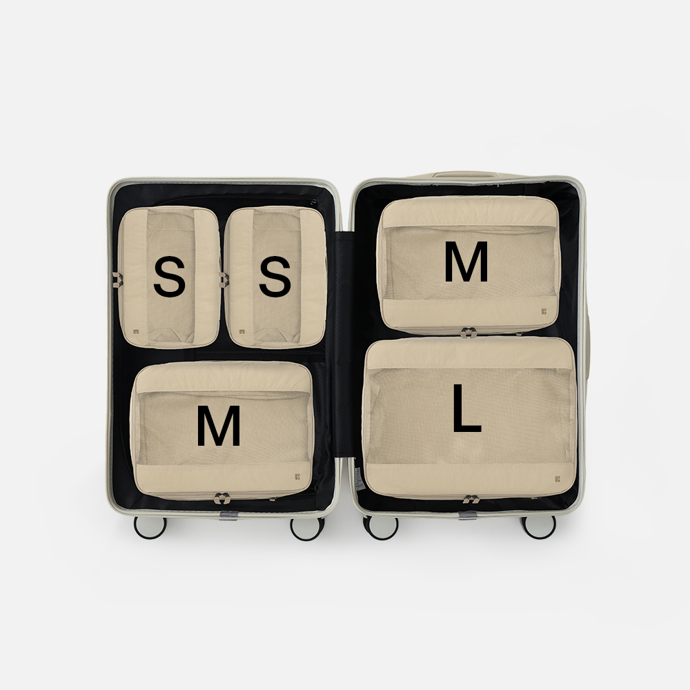
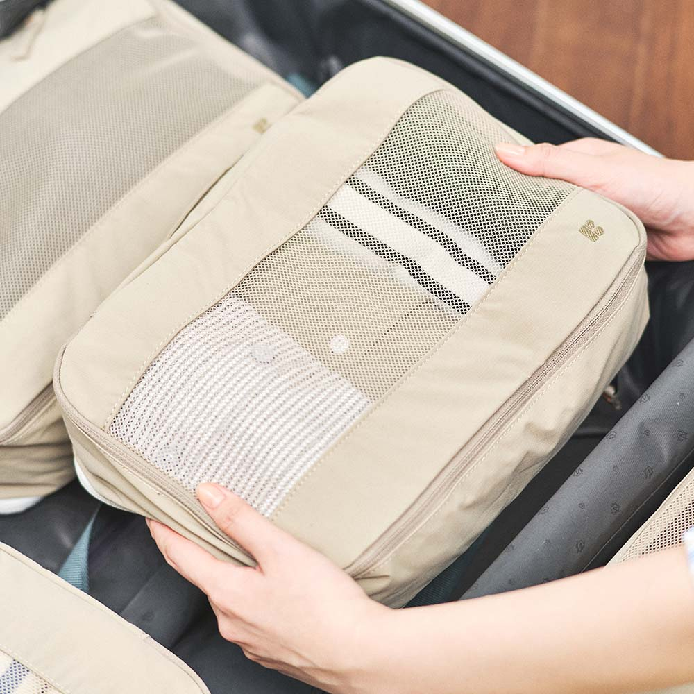
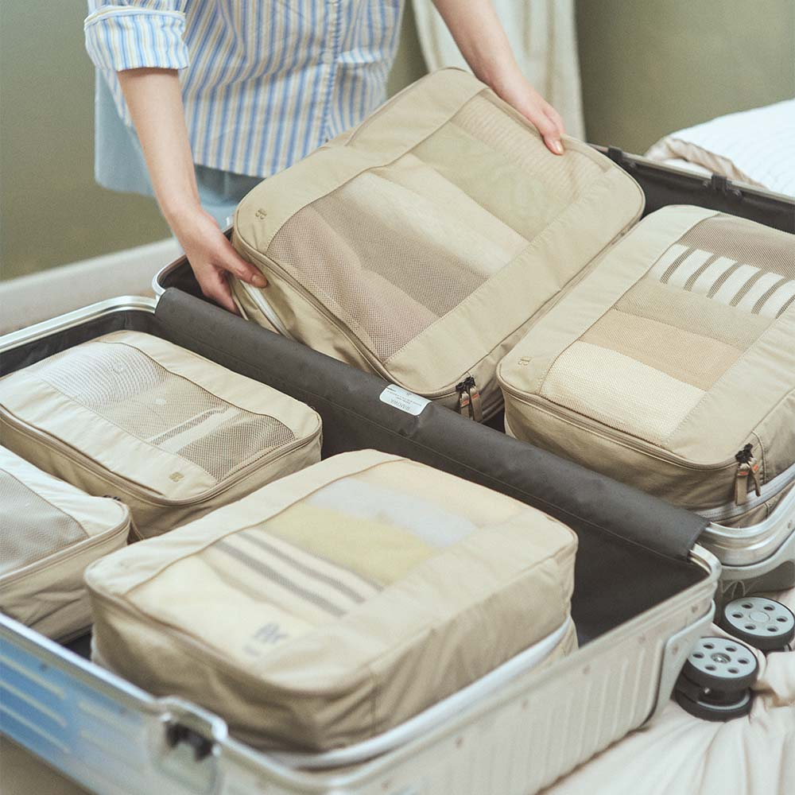
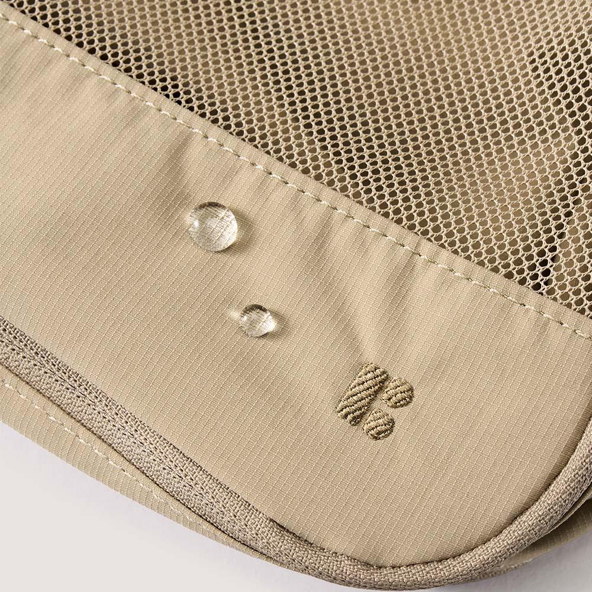
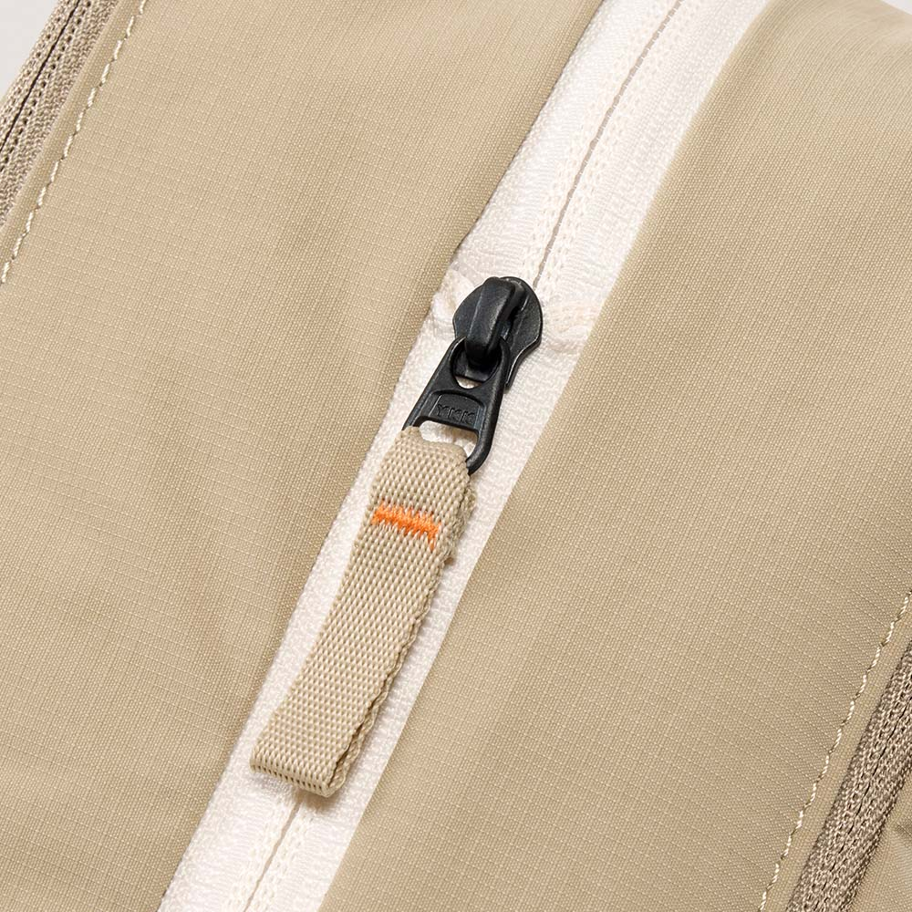
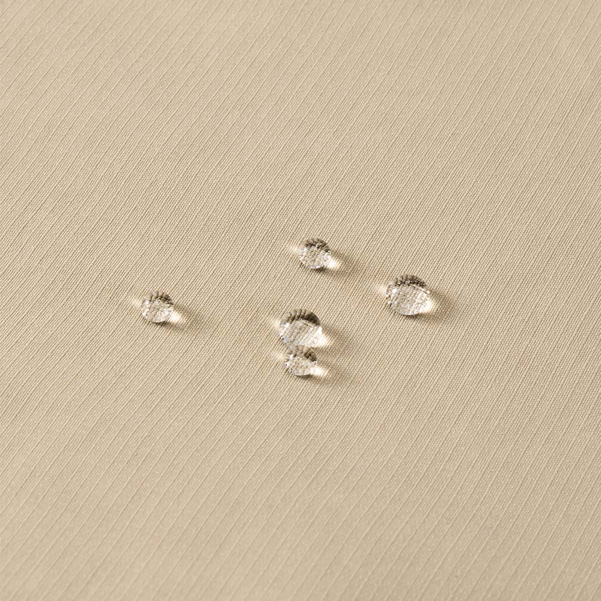

몇 번을 풀러 보고, 그래도 안 들어가면 입을 옷부터 다시 뺍니다.
여행의 시작, 정리부터
들어가지 않던 20인치 캐리어에,
옷의 자리를 만들어보세요.
파우치 안에서 옷을 나누고, 캐리어 안에서는 필요한 옷을 바로 찾을 수 있습니다.
내 캐리어에 맞는 옵션과 가격을 확인하세요.
쿠팡 옵션·가격 확인하기이 포스팅은 쿠팡 파트너스 활동의 일환으로, 이에 따른 일정액의 수수료를 제공받습니다.
결제 전 쿠팡에서 옵션, 가격, 배송·반품 조건을 확인하고 결정하세요.

캐리어 안에 어떻게 들어가는지 보기출발 전날의 캐리어
짐을 몇 번이나 넣는데,
캐리어는 벌써 꽉 찬 것 같나요?
니트와 잠옷을 넣고 나면 지퍼는 닫히지만, 여행지에서 필요한 물건을 찾을 자리는 남지 않습니다.

입을 옷과 남은 옷을 나눌 곳이 없어 캐리어를 다시 엽니다.
정리할 구역이 없으면 캐리어 안은 더 복잡해집니다.
그래서 옷을 빼지 않고 정리하는 방법이 필요합니다.
옷을 빼는 대신,
부피를 정리하세요.
파우치에 옷을 나눠 담고 캐리어 안에서는 중앙 압축 지퍼만 잠그면 됩니다.
먼저 나눠 담습니다
부피가 있는 옷을 파우치 안에 고르게 넣어, 캐리어 안에서 옷의 자리를 분명하게 만듭니다.

지퍼 하나를 잠급니다
가운데 압축 지퍼를 잠가 정리된 옷의 부피를 줄이는 방식입니다. 별도의 펌프가 필요하지 않습니다.
앞면과 뒷면, 나눠 쓰세요.
한쪽에는 입을 옷을, 다른 쪽에는 마른 상태의 착용 후 옷을 나눠 담아 여행 중에도 정리 자리를 유지할 수 있습니다.
젖은 수영복이나 냄새가 강한 옷은 별도 비닐 보관을 권장합니다.펌프 없이, 네 번의
순서로 끝납니다.
옷을 너무 꽉 채우기보다 약 70-80%만 담고 가운데 지퍼를 천천히 잠가 주세요.
과하게 채우면 가운데 압축 지퍼가 뻑뻑해질 수 있습니다.
- 01
가볍게 엽니다
가운데 압축 지퍼를 완전히 열어 파우치를 준비합니다.
- 02
옷을 나눠 담습니다
한쪽 칸에 옷을 고르게 넣어 약 70-80%만 채웁니다.
- 03
양쪽 지퍼를 잠급니다
내용물을 정리한 뒤 각 칸의 지퍼를 닫습니다.
- 04
가운데 지퍼를 잠급니다
상단을 가볍게 누르며 가운데 압축 지퍼를 끝까지 잠급니다.
압축은 구조로,
디테일은 소재로.
확인된 사양과 실제 사용 장면으로 선택 전 궁금한 점을 정리했습니다.

210D 고밀도 립스탑 원단
겉감에 방수 코팅이 적용된 원단입니다.

정품 YKK 지퍼
반복해서 여닫는 지퍼에 YKK 부자재를 사용했습니다.
압축 후 높이
판매처 고시 기준입니다. 의류 종류와 수납 방식에 따라 달라질 수 있습니다.
“겨울 니트 4개를 넣고, 20인치 캐리어 한쪽에 들어갔어요.”2박 3일 겨울 여행 후기 요약
“입은 옷과 남은 옷이 섞이지 않아 정리하기 쉬웠어요.”3박 4일 여행 후기 요약
사기 전에, 세 가지만
확인하세요.
20인치 캐리어라면 모두 들어가나요?
캐리어는 제조사마다 내부 치수가 다릅니다. 구매 전 캐리어의 내부 가로·세로와 파우치 크기를 비교해 주세요. L·M 조합이 모든 20인치 캐리어에 들어간다고 단정할 수는 없습니다.
얼마나 채워야 지퍼가 부드럽게 잠기나요?
옷을 고르게 넣은 뒤 약 70-80%만 담아 주세요. 공기를 많이 머금는 니트나 패딩류는 압축 체감이 다를 수 있습니다.
입은 옷은 새 옷과 어떻게 넣어야 하나요?
마른 상태의 착용 후 의류는 앞면과 뒷면 칸으로 나눌 수 있습니다. 젖은 수영복이나 냄새가 강한 옷은 별도 비닐 보관을 권장합니다.
다음 여행의 짐부터
캐리어 안의 자리를
먼저 정리하세요.
가져갈 옷의 부피를 정리하고, 여행 중 입은 옷과 남은 옷도 나눠 담을 수 있습니다.
L 단품과 S+M+L 3종 세트 중, 캐리어 내부 치수와 여행 일수에 맞는 옵션을 쿠팡에서 비교하세요.
쿠팡 옵션·가격 확인하기이 포스팅은 쿠팡 파트너스 활동의 일환으로, 이에 따른 일정액의 수수료를 제공받습니다.
현재 가격과 재고, 배송·반품 조건은 쿠팡 상품 페이지에서 최종 확인해 주세요.
